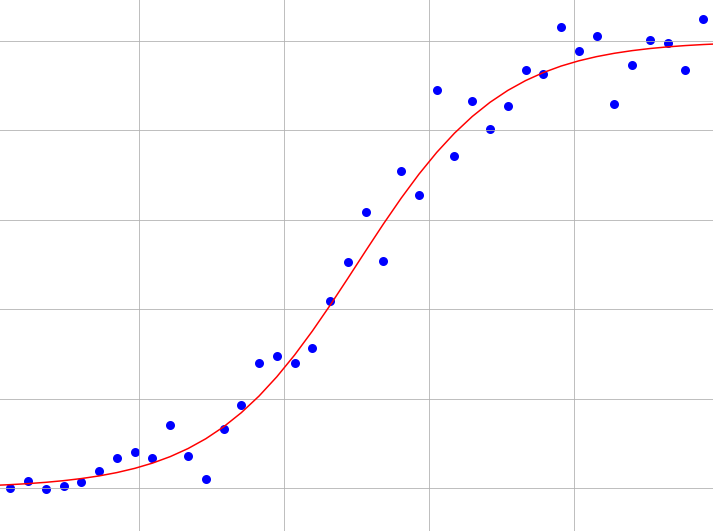

<section id="main" >
    <div class="inner">
        <h3 style="text-align:center;">Models</h3>
        <h4>Linear Models</h4>
        <ul>
            
            <a href="linear_regression_post.html">Linear regression</a>
            <p class="article description">
                A walk-through of the maths behind the most well-known model for regression with an implementation in Python
            </p>
        </ul>
        <ul>
            
            <a href="logistic_regression_post.html">Logistic regression</a>
            <p class="article description">
                A walk-through of the maths behind the most well-known model for classification with an implementation in Python
            </p>
        </ul>
        <h4>Kernel methods</h4>
        <ul>
            
            <a href="svm_post.html">Support Vector Machines</a>
            <p class="article description">
                An explanation of the maths behind support vector machines
            </p>
        </ul>
        <h3 style="text-align:center;">Projects</h3>
        <ul>
            
            <a href="dqn_post_part1.html">Alphacross, Part 1</a>
            <p class="article description">
                The first steps to build an AI for board games
            </p>
        </ul>
        <br>
        <h3 style="text-align:center;">Food & Travel</h3>
        <h4>New York City</h4>
        <ul>
            
            <a href="nyc_ramen_tour.html">New York ramen tour</a>
            <p class="article description">
                A week-long ramen tour in NYC
            </p>
        </ul>
    </div>
</section>